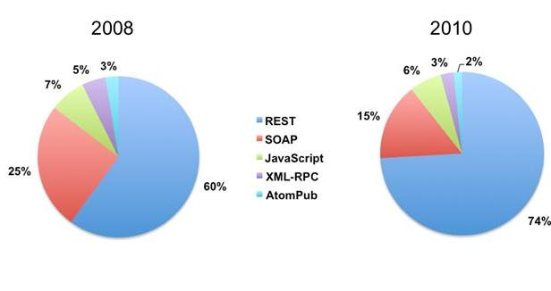
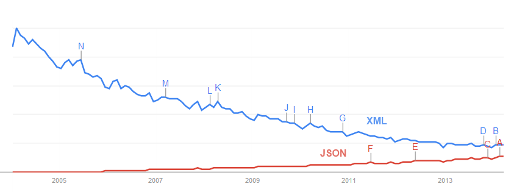
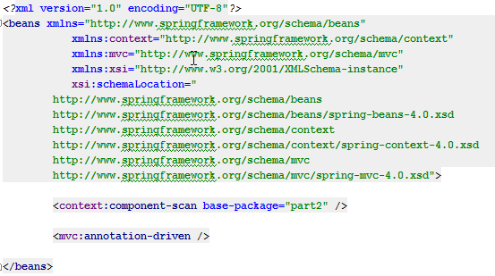
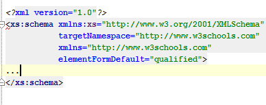
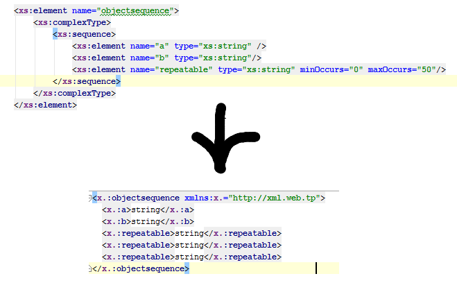
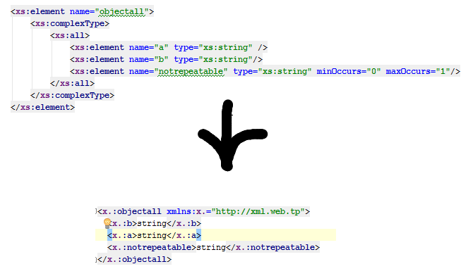

Langage Web 2 : XML
Présentation
Youen Chéné
CTO @CreativeData_fr
Activiste au Normandy JUG
Publicité
3ème Mardi de chaque mois à Seine Innopolis
Publicité
Novembre 2015
www.codeursenseine.comXML
Langage de balisage extensible.
http://www.w3schools.com/xml/
Enjeux
15% des API public.
60-70% des APIs dans les directions informatiques.Utilisé par de nombreux framework java.
Tendance
XML est remplacé par JSON dans les API.
XML est remplacé par de la configuration annoté ou programmatique dans les framework.
Un existant énorme, La connaissance de XML est indispensable.
Evaluation
5 points sur les exercices
5 points sur la collaboration
10 points sur le projet
Agenda
- Exercices de bases : XSD, XLST, DOM, SAX
- Exercices avancés : exposer du XML et du SOAP
- Projet
Technologies et outils
- API standard Java XML : DOM et SAX
- Spring MVC
- SOAP, SOAPUI
- Cloudbees
- Android
Schéma XML
Décrire le format d'un document XMl.
- Définition Type de Document : DTD
- Schéma XML : XSD
http://www.w3schools.com/schema/
Namespace
Dans un fichier XML.
Namespace
Dans un fichier XSD.
Les types de bases
- xs:string
- xs:decimal
- xs:integer
- xs:boolean
- xs:date
- xs:time
Sequence versus all
Sequence
Ordre obligatoire, répétable possible.
Sequence versus all
All
Ordre non obligatoire, répétable impossible.
Attributs
<xs:attribute name="xxx" type="yyy"/>
Contraintes
<xs:simpleType>
<xs:restriction base="xs:string">
<xs:enumeration value="Audi"/>
<xs:enumeration value="Golf"/>
<xs:enumeration value="BMW"/>
</xs:restriction>
</xs:simpleType>
Types Complexes
<xs:complexType>
<xs:sequence>
<xs:element name="name" type="xs:string"/>
<xs:element name="level" type="xs:integer"/>
</xs:sequence>
</xs:complexType>
Code time!
Construire le XSD d'un CV.
- Nom, Prénom
- Objectif
- Expérience Professionelles
- Expérience 1
- Expérience 2
- Scolarités
- Ecole 1
- Ecole 2
- Compétences
- Langues
- Langue 1 : niveau
- Langue 2 : niveau
- Langue 3 : niveau
- Compétences informatiques
- Compétence 1 : niveau
- Compétence 2 : niveau
XML et API Java
- Valider fichier XML
- Lire un fichier XML
- DOM
- SAX
- XQuery / XPath
SAX versus DOM
|
|
les avantages |
les inconvénients |
|
DOM |
parcours libre de l'arbre possibilité de modifier la structure et le contenu de l'arbre |
gourmand en mémoire doit traiter tout le document avant d'exploiter les résultats |
|
SAX |
peu gourmand en ressources mémoire rapide principes faciles à mettre en oeuvre permet de ne traiter que les données utiles |
traite les données séquentiellement un peu plus difficile à programmer, il est souvent nécessaire de sauvegarder des informations pour les traiter |
Code time!
- Créer XML
- Valider fichier XML
- Lire un fichier XML
- DOM
- SAX
- xquery / xpath
Valider le fichier xml
http://www.edankert.com/validate.htmlTransformer un fichier XML avec XSLT
XML vers HTML
XML vers XML
Jean Michel Doudoux - Chapitre XLST
http://www.w3schools.com/xsl/
Code time!
Transformer un fichier CV xml en CV html.
Exposer du XML via un serveur Web
Exposition d'un objet "marshallé" en XML.
Code time!
Exposer un cv (stocké en object) en xml.
ExampleExposer un service SOAP via un serveur Web
le contrat : WSDL
Mode Contract-First
Mode Code First
Code time!
Obtenir un CV via un service SOAP en contract Last avec CXF.
Example Soap UICode time!
Sauvegarder un CV via un service SOAP en contract First avec CXF.
Help Soap UIProjet
Exposer des CVs sur une API REST
Les produire et les consommer sur une application Android

API REST
/resume PUT
/resume GET
/resume/{id} GET